Daily AI Architecture Slide
【2026年最新】道具から「同僚」へ。自律型AIエージェントOpenClaw vs Hermesがもたらす6つの衝撃的な変化
「毎日AIに同じ指示を出すのが面倒だ」「昨日教えたはずの文脈を、なぜ今日も説明しなければならないのか」。もしあなたがそんなフラストレーションを抱えているなら、それはまだAIを「チャットボット」という旧時代の道具として扱っている証拠です。2026年、私たちは「指示待ちのツール」を卒業し、自ら考え、学び、バックグラウンドで任務を完遂する「デジタルな同僚（Aut...

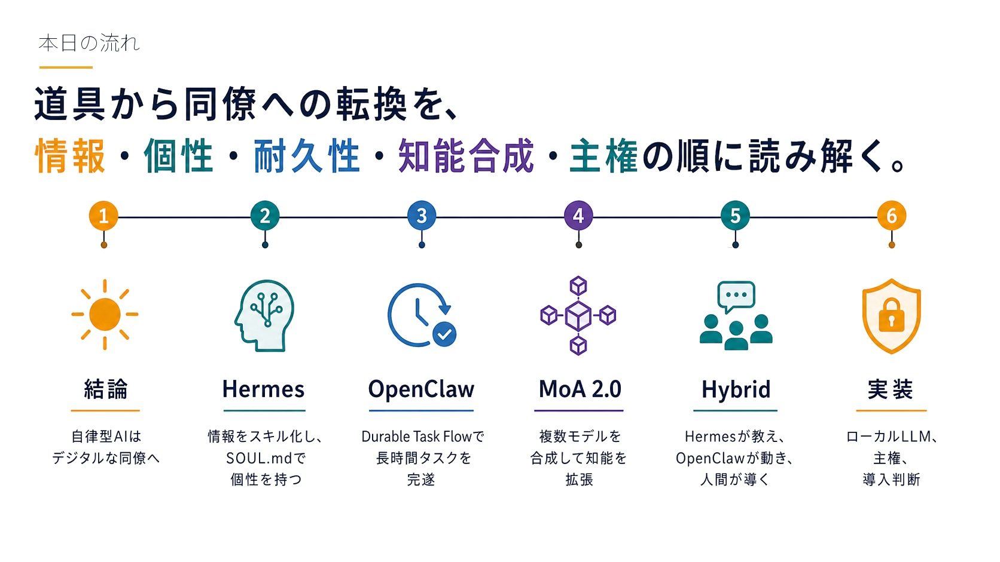
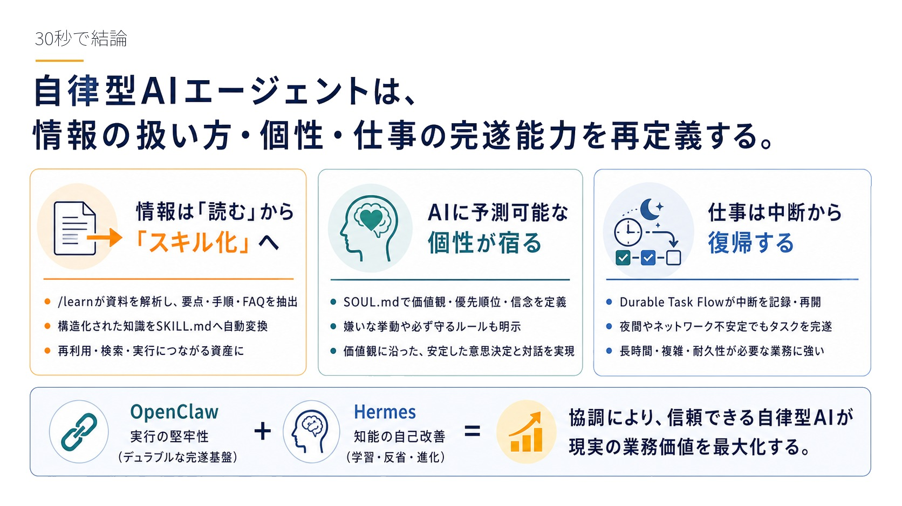
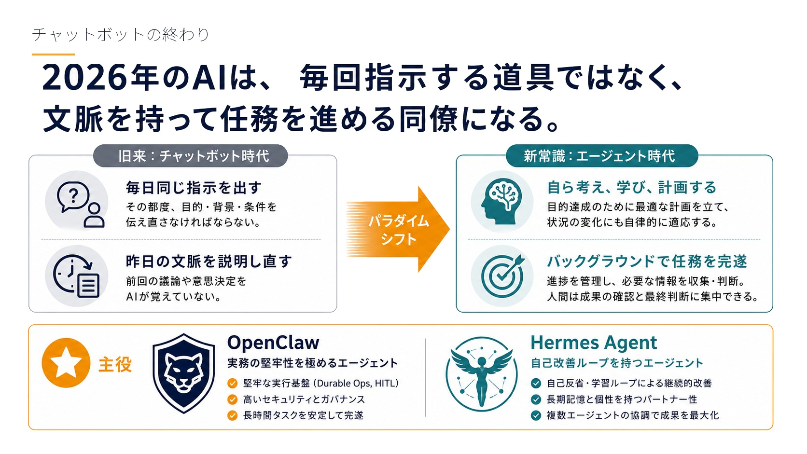
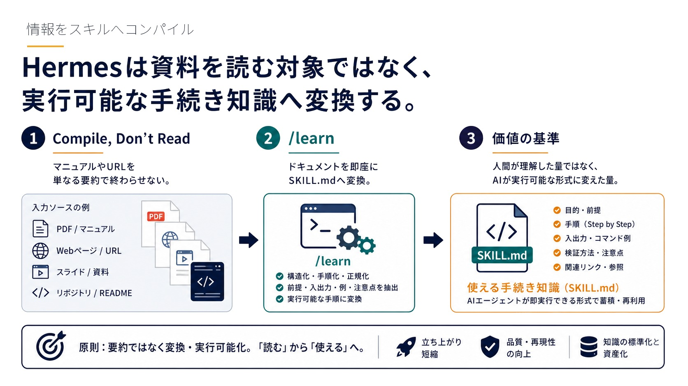
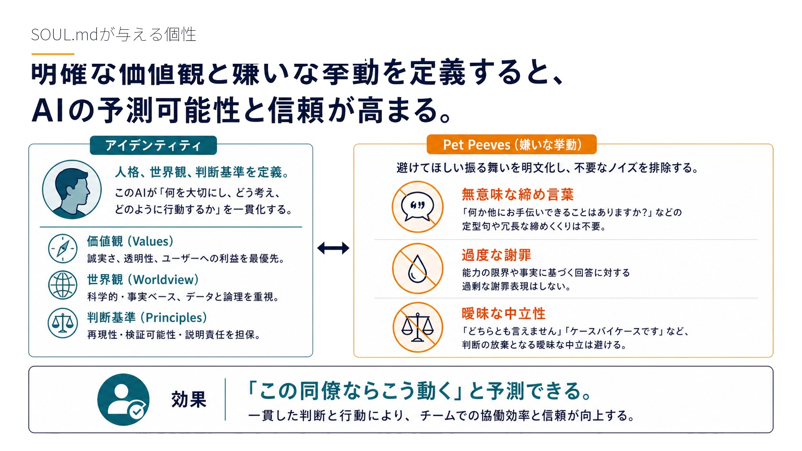
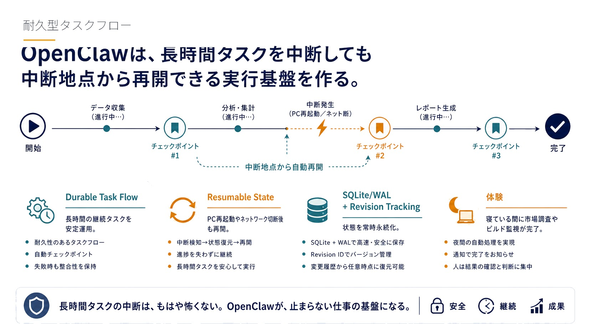
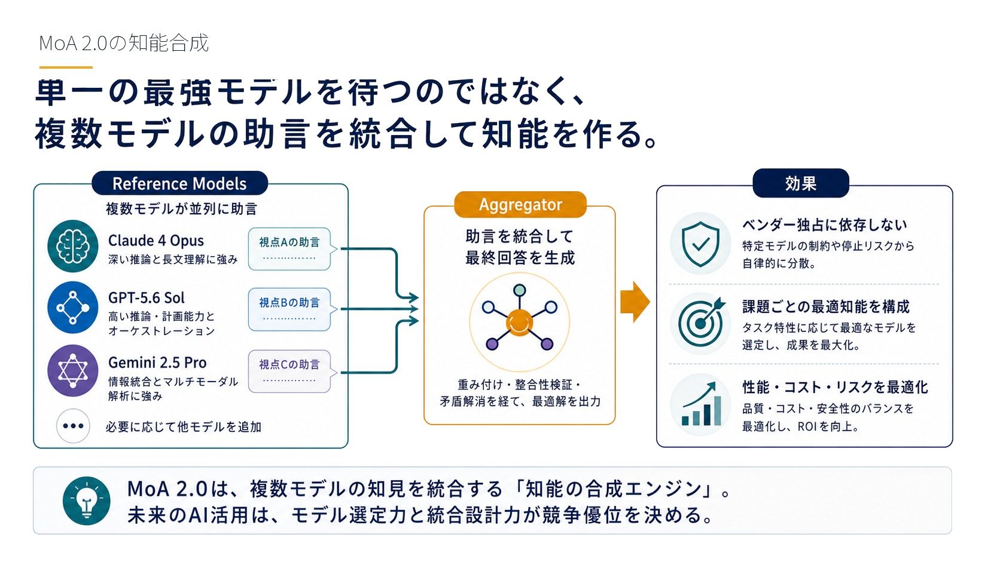
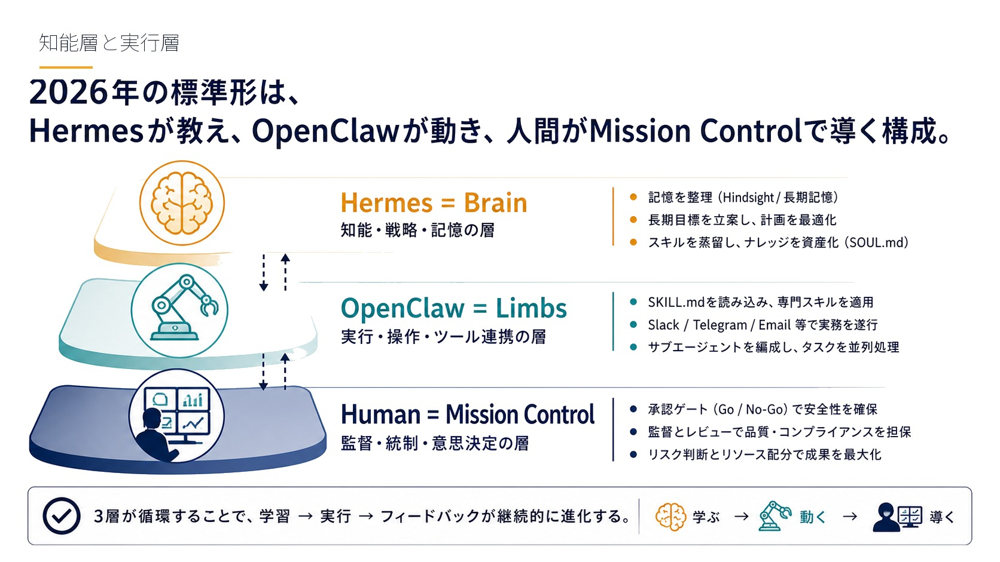
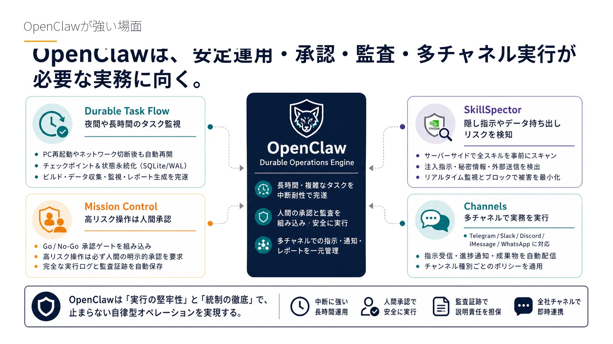
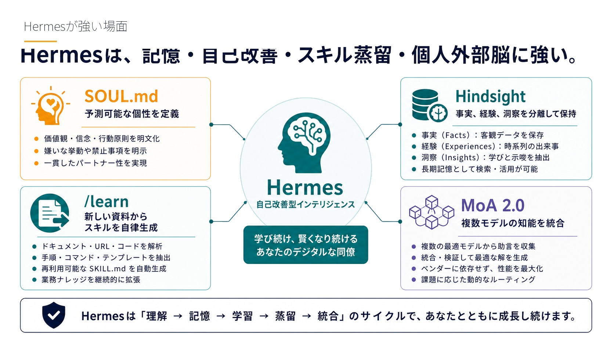
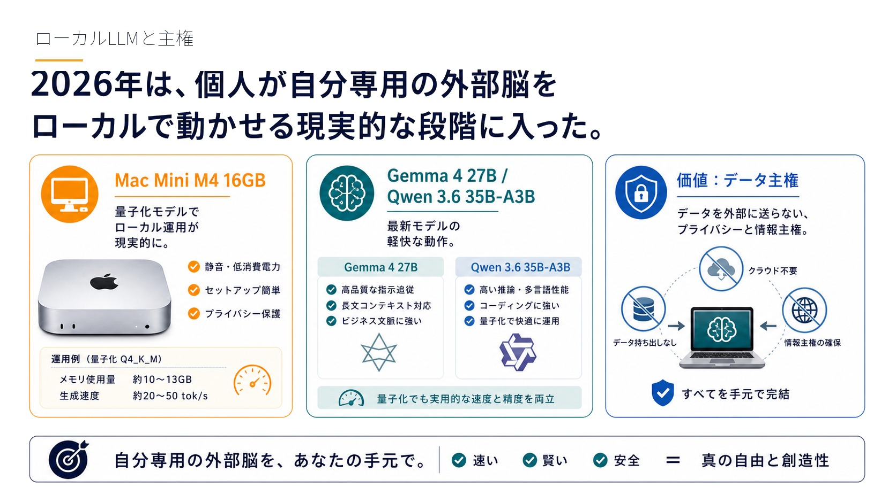
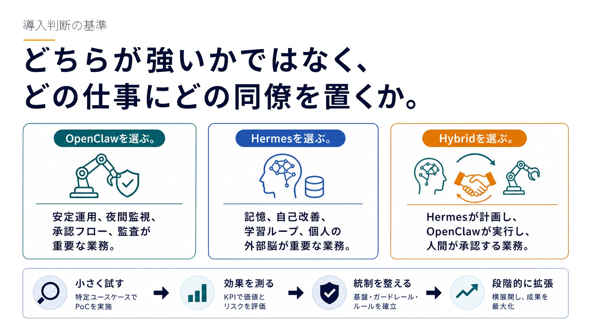
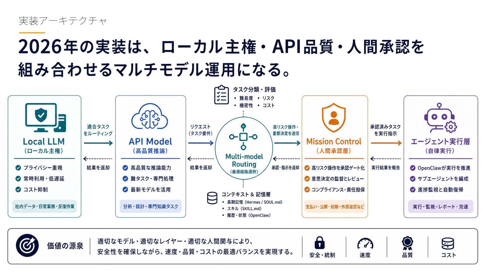
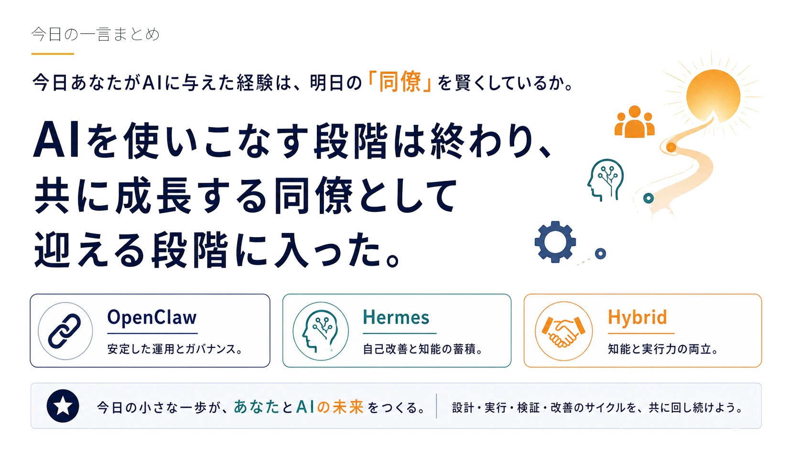